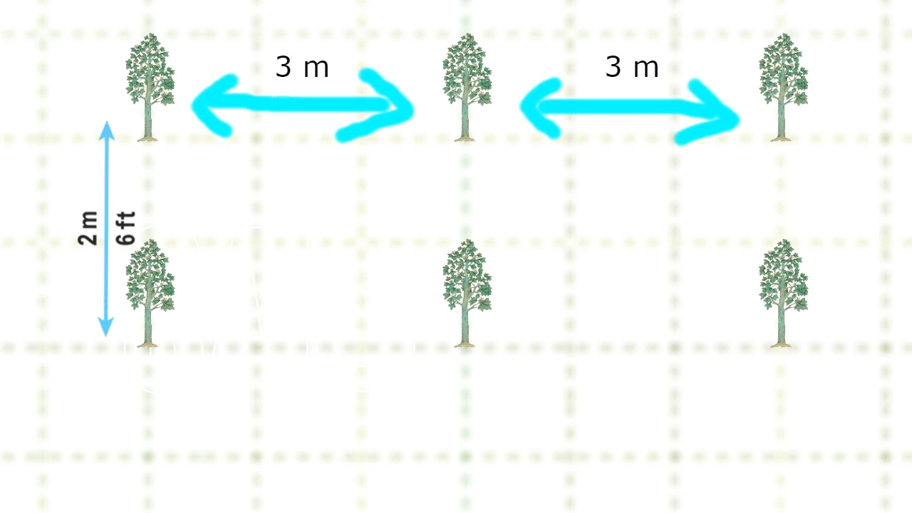
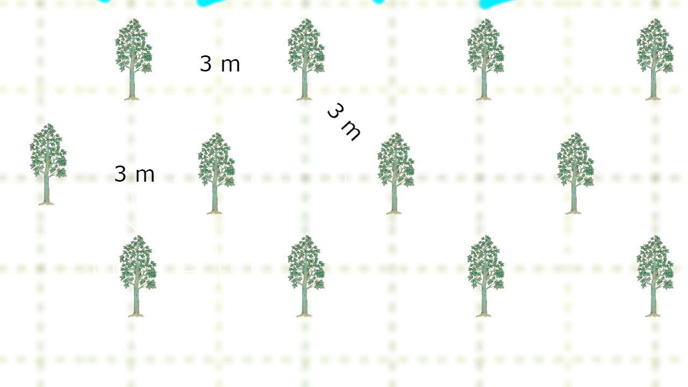

Sistemi sadnje
Generalno, preporučuje se 3 sistema za sadnju paulovnija.
1. Kvadratni sistem
Ovaj sistem je najjednostavniji i široko prihvaćen. Parcela je podeljena na kvadrate, a drveće je zasađeno na uglovima.

2. Pravougaoni sistem
Slično kvadratnom sistemu, ali sa pravougaonicima, omogućavajući više biljaka u nizu. Ima iste prednosti, ali može da primi više stabala na parceli.
3. Šestougaoni / Trougaoni sistem
Drveće je zasađeno na uglovima jednakostraničnih trouglova, formirajući šestouglove. Odgovara plodnim zemljama sa dovoljno vode. Iako može da posadi 15% više stabala, manje je usvojen zbog poteškoća u rasporedu i uzgoju.
